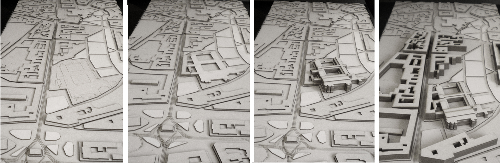
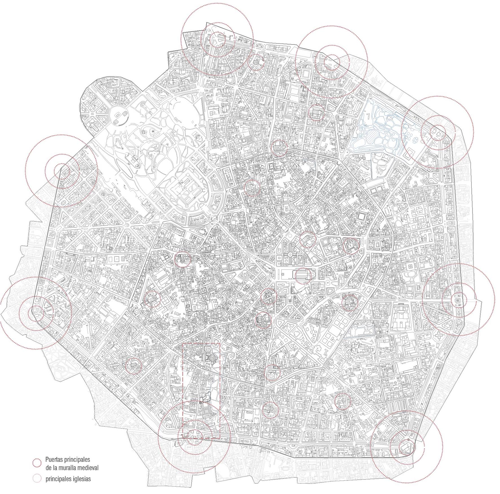
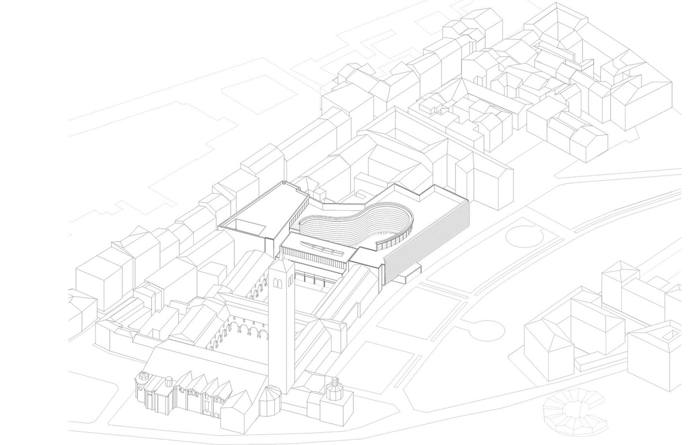
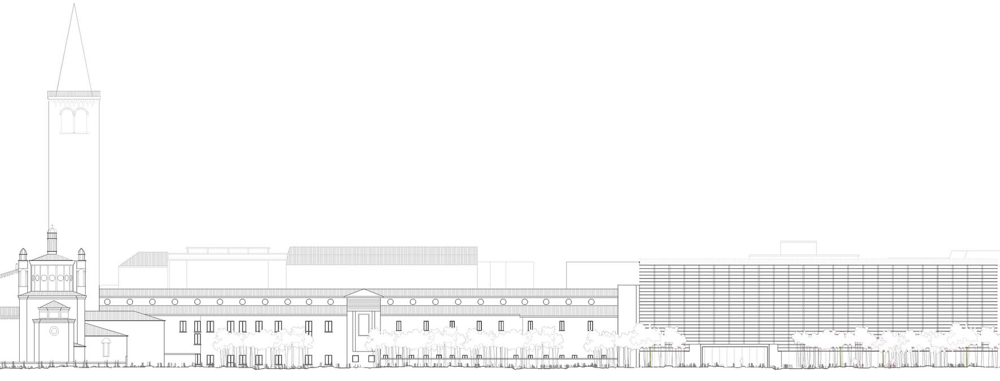
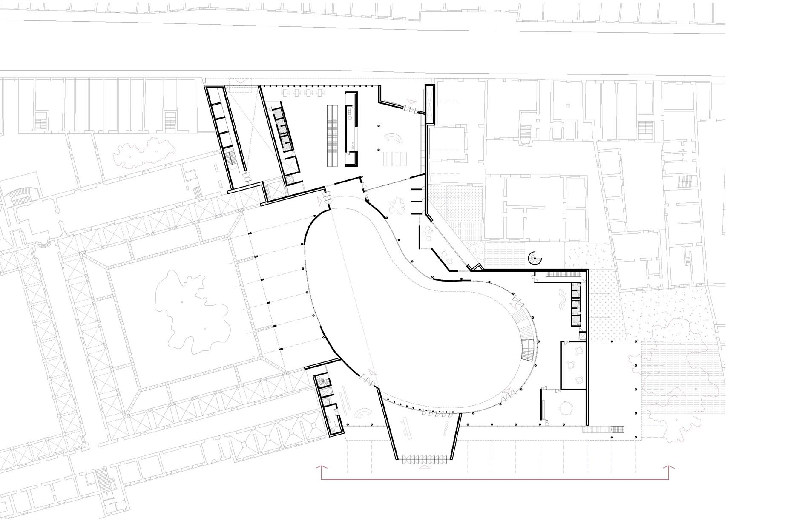
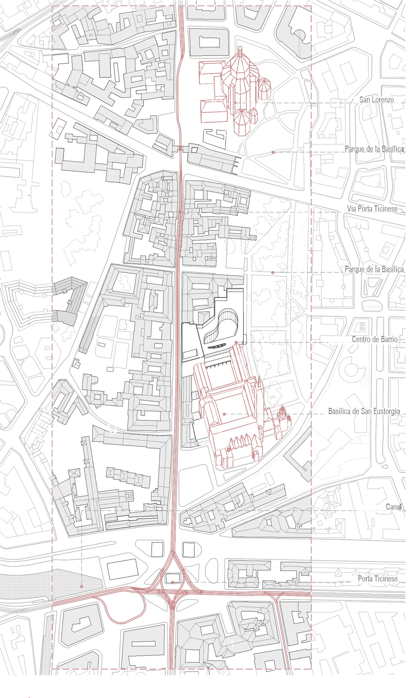

-

maqueta de contexto urbano

centro histórico de Milán

axonometría del conjunto

maquetas de desarrollo de proyecto

fachada al parque

planta de acceso

primera planta

sección transversal a través del patio
El proyecto se encuentra situado al sur de Milán, en el barrio de Porta Ticinese, en un contexto urbano caracterizado por su trazado gótico, en el que destacan dos monumentos: la iglesia de San Lorenzo, con su orden central y vertical, y la basílica de San Eustorgio, con su doble claustro parcialmente destruido, pero que aún así, mantiene una condición de cierta independencia respecto a su entorno.
La propuesta resuelve la articulación urbana entre los diversos elementos que configuran este ámbito:
1.- El claustro de San Eustorgio
2.- El parque delle Basiliche (el tercero más grande de Milán) y el Corso di Porta Ticinese.
Devolviéndole el límite destruido a la basílica, solucionando el contacto con el parque y las traseras medianeras de los edificios aledaños; así como dándole una continuidad a la calle de la que carecía, generando una conexión a través del propio edificio entre ésta y el parque.
El edificio está constituido por un perímetro más geométrico y rígido, que responde y resuelve el contacto con los condicionantes ya mencionados; que se abre en su interior para generar un gran patio central, ahora más libre y orgánico, que continúa a su vez con el ritmo de patios de la basílica y se comunica (tanto física como visualmente) con uno de ellos.